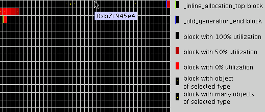

VM Memory Profiler
Copyright 2006 Sun Microsystems, Inc. All rights reserved.
Memory profiler is a tool for getting detailed information about the Java heap contents during the VM execution. It allows to track memory leaks and optimize memory usage.
Overview of heap, old generation, new generation and unused heap space sizes and layouts.
View loaded classes
View locations of all objects of given class(including array classes)
View some path from some root to the given object (to help detect memory leaks)
View heap usage statistics(percentage of heap used by objects of given class f.e.)
Possibility to pause/resume VM
View of heap utilization (percentage of live objects in given heap block)
The design of the memory profiler support is the same as the design of the java-level debugger support in the VM. Moreover, they are using the same transport layer, so memory profiler and java debugger couldn't be used together for now.
Memory profiler allows to take heap snapshot at any point during the VM execution. The VM is suspended while the profiler collects the snapshot information.
Memory profiler support implementation consists of two parts:
The actual code in the virtual machine to provide data about heap
The proxy that transmits information to the client.
The memory profiler support in the VM provides all the information about object addresses, classes, sizes and references. The proxy propagates it to an arbitrary client. Existing prototype includes Swing UI client which presents gathered data to the user and performs analysis of the data, such as looking for live objects, calculating statistics and so on. Such design allows writing plugins for existing IDE's, which would allow to work java debugger and memory profiler together.
The current interface contains the following functions:
getting global pointers(bounds of heap, old generation, used heap)
getting all objects data(classes, sizes, addresses, references)
getting addresses of all roots
getting names of all classes
Building the VM with memory profiler support
set ENABLE_MEMORY_PROFILER, ENABLE_JAVA_DEBUGGER and ENABLE_ROM_JAVA_DEBUGGER system varaibles to true
make clean VM build
Starting the server part
Start the VM
The command line is following: cldc_vm -memory_profiler -port <port_number> class
The -memory_profiler indicates that memory profiler support are enabled. The VM would be suspended awaiting connection from a client. The <port_number> is the port on which the VM will await connection from a client.
Start the debug agent
java -classpath <path> kdp.KVMDebugProxy -l <localport> -p -r <vm_host> <vm_port> , where <localport> is the port to which a client will connect, -p indicates to run as a debug proxy, <vm_host> is host where the VM runs, <vm_port> is the port on which the VM awaits connection.
Now you can connect to the VM. Below process of using standart Client tool.
Using the client tool
The following command line is used to run Client tool is “java view.Client -host <hostname> -port <portname>” where hostname and postname are the parameters of running debug agent. The default values are “localhost” and 5000.
The main screen contains the following elements:
memory panel for displaying the heap, the bounds of old generation, used heap e.t.c., displaying heap utilizaion(percentage of space used by live objects in each heap block), displaying objects locations. Click on a block shows all the objects from the block.

In the bottom left corner there is a List which contains all loaded classes. Choosing single class will show locations of all object of the class on the memory panel and on the panel to the right of the list. For the description of the panel see the next item
Panel for working with the objects of a single class. It contains list with the addresses of the objects of the selected class. A single object, when selected, is shown in details. Address of the object, its type, all objects which have references to it and all objects referred by this object are displayed. Also, if this is live object, “Show path from the root” button is enabled. It opens “Show path from the root” dialog, which shows what prevents this object from being collected. This feature is described in the next item.
Show path from the Root dialog. The dialog displays some path to the object from some root. It has the similar interface to the panel from the previous item. The list contains objects which lays on the path. The topmost object is root object.

Observing objects from a single block. Click on a block on the memory panel opens the dialog similar to the one from the previous item, but which contains all objects from the block.
Controlling VM execution.There is “Pause/Resume” button in the bottom right corner of the main screen.
Observing statistics. There is the button “Statistics” on the main screen. it opens the “Statistics” dialog. It contains table which shows the following information for each class(including VM intenal objects): number of objects in heap, size of all objects in heap, average size of object, percentage of heap used by objects of the class, percentage of live object of the given class, percentage of object of the given class which are inside old generation